Predictive Analytics in R
David O'Brien dunder.chief@gmail.com
August 25, 2015
What is Predictive Modeling?
Given a set of predictor variables (X)
Predict an outcome (Y)
A simplified definition.
- may not have an outcome Y
- may want to know reasons behind why X predicts Y
Our Flower!

What kind of iris is this?
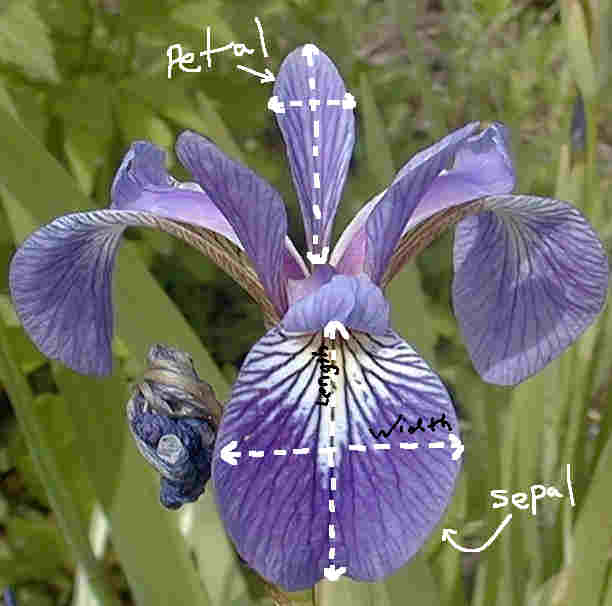
Our guess:
| Sepal Length [X1] | Sepal Width [X2] | Petal Length [X3] | Petal Width [X4] | Species [Y] |
|---|---|---|---|---|
| 6.5 | 2.8 | 4.6 | 1.5 | ??? |
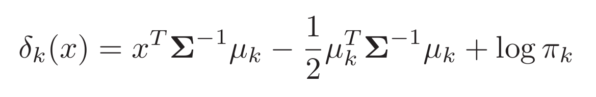
| Probablity | |
|---|---|
| setosa | 0.000 |
| versicolor | 0.995 |
| virginica | 0.005 |
Versicolor!
How do we estimate these parameters:
| Sepal Length [X1] | Sepal Width [X2] | Petal Length [X3] | Petal Width [X4] | Species [Y] |
|---|---|---|---|---|
| 5.1 | 3.5 | 1.4 | 0.2 | setosa |
| 4.9 | 3.0 | 1.4 | 0.2 | setosa |
| 4.7 | 3.2 | 1.3 | 0.2 | setosa |
| 7.0 | 3.2 | 4.7 | 1.4 | versicolor |
| 6.4 | 3.2 | 4.5 | 1.5 | versicolor |
| 6.9 | 3.1 | 4.9 | 1.5 | versicolor |
| 6.3 | 3.3 | 6.0 | 2.5 | virginica |
| 5.8 | 2.7 | 5.1 | 1.9 | virginica |
| 7.1 | 3.0 | 5.9 | 2.1 | virginica |
Implementation in R:
library(MASS)
trainset <- iris[-example_row, ]
fit.lda <- lda(Species ~ ., data=trainset, prior=c(1/3, 1/3, 1/3))
pred <- predict(fit.lda, newdata=iris[example_row, ])
round(pred$posterior, 3)
## setosa versicolor virginica
## 55 0 0.995 0.005
Data Inputs:
formula, data.frame, matrix, or seperate X & Y objects
Since most of the predictive modeling packages are written by different people, they often have different option names/ input structure
predict(fitObject, type = ???)
| Model | Probability |
|---|---|
| gbm | "response" |
| mda | "posterior" |
| rpart | "prob" |
| Weka | "probability" |
| LogitBoost | "raw" |
| lda | None needed |
There is some standardization, such as the predict function to test our model on a new datasets
Typical flow for trying a new algorithm:
- Find the package(s) and install
- Find training function
- Split data into multiple train/test sets
- Set up your data to fit the training model
- Formula
- Matrix
- Data.frame
- X, Y as seperate
- Pre-process data
- Look up tuning params
- Write loops for model tuning / repeated cross-validation
- Analyze results
Typical flow for base r
in caret all of this is contained in less than 5 lines of code
Caret
Website: https://topepo.github.io/caret/index.html List of Models: https://topepo.github.io/caret/modelList.html
options(stringsAsFactors=FALSE)
models <- read.csv('../caret_models.csv')
table(models$Type)
##
## Classification Dual Use Regression
## 74 73 45
class_models <- subset(models, Type %in% c('Classification', 'Dual Use'),
select='method.Argument')
91 Machine learning packages
With all these dependencies, probably a few thousand packages in total???
Train lots of models at once
library(caret); library(doMC); registerDoMC(7)
myFits <- foreach(this.model = class_models) %do% {
train(Species ~ .,
data=iris,
method=this.model,
preProcess='pca',
trControl=trainControl(method='repeatedcv', number=5, repeats=7),
tuneLength=5)
}
This will: 1. preprocess with PCA, 2. train with 5-fold cross validation, 7 repeats in parallel 3. will also optimize tuning parameters
Took XX minutes to run
Not all models worked because we have 3 categories
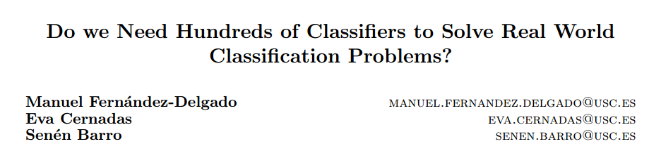
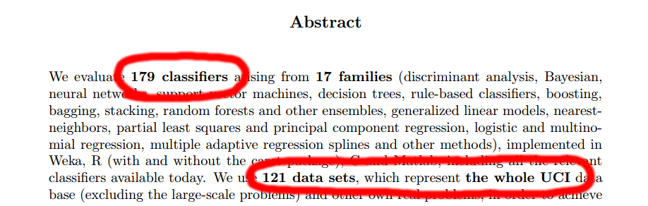
What else can caret do?
Data Splitting
Pre-processing
Feature Selection
Model tuning / Resampling
Variable Importance
Easier to use than base R
Prevents common mistakes
Data Splitting | Why?
\[y = x^3\]
y <- seq(1, 10, by=.1)
x <- seq(1, 10, by=.1)^3
par(mar=c(0,0,0,0))
plot(y ~ x, pch=16)
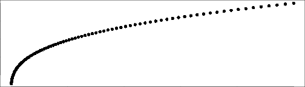
set.seed(1)
error <- rnorm(length(x), sd=2)
dat <- data.frame(X = x + error, Y = y + error)
par(mar=c(0,0,0,0))
plot(y ~ x, pch=16, col='gray')
points(Y ~ X, data=dat, pch='X', col='red2')
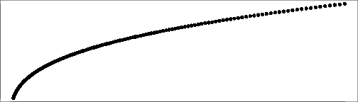
Create data where we know the optimal fit
Add some randomness to it
set.seed(1)
trainIndex <- createDataPartition(y=dat$Y, p=0.7, list=FALSE)
training <- dat[trainIndex, ]
test <- dat[-trainIndex, ]
In-sample (training set) | Out-of-sample (test set)
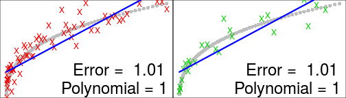 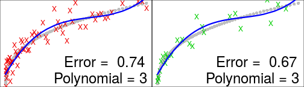 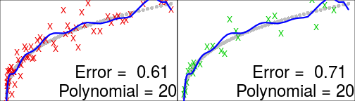 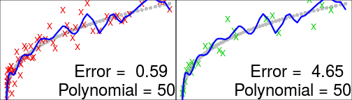
Error only decreases in training set
At polynomial = 50. Our model no longer works on new data
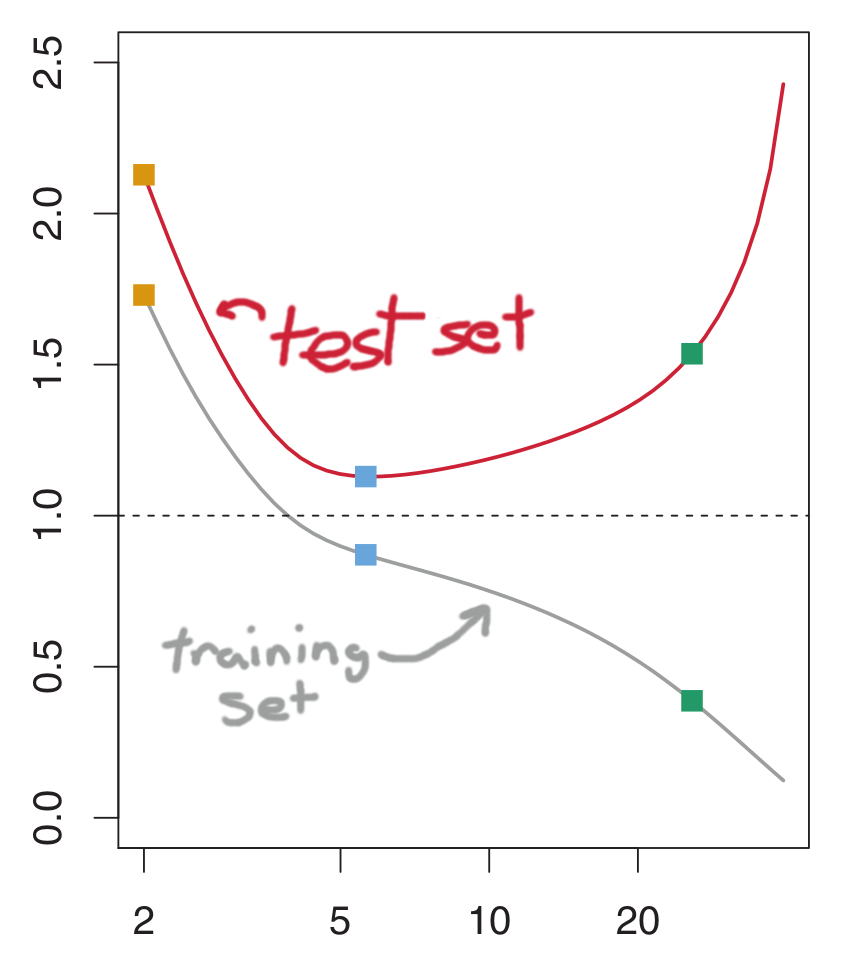
Data Splitting
- Training set [70%]:
Train a model 100x with different tuning parameters - Cross-validation set [15%]:
Evaluate these 100 models - Test set [15%]:
Use final model (only one!) to evaluate your the accuracy of your analysis
Most ML models have tuning parameters & we need to optimize these useing an out of sample dataset
This is our out of sample set for evaluating these params
In order to avoid overfitting due to tuning param selection, need a fresh test set
Data Splitting
Example:
library(caret)
trainIndex <- createDataPartition(iris$Species, p = .8,
list = FALSE,
times = 1)
irisTrain <- iris[ trainIndex, ]
irisTest <- iris[-trainIndex, ]
Why split data? To avoid overfitting our results
Example: This is a good example of how caret make you do things the right way. I would normally just select random rows instead of breaking down into equal classes.
Data Splitting (Time Series)
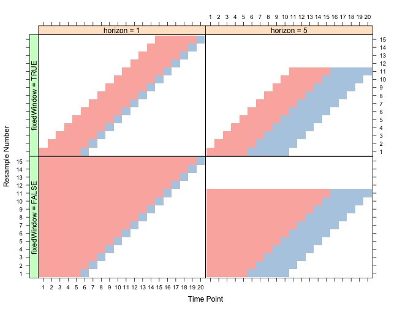
library(quantmod)
gold <- getSymbols('GLD', src='yahoo', from='1970-01-01', auto.assign=FALSE)
Time series can't be split randomly because the slice we're predicting depends on the previous samples.
library(caret)
slices <- createTimeSlices(Cl(gold), initialWindow=1000,
fixedWindow=TRUE, horizon=500, skip=500)
str(slices)
## List of 2
## $ train:List of 3
## ..$ Training0001: int [1:1000] 1 2 3 4 5 6 7 8 9 10 ...
## ..$ Training0502: int [1:1000] 502 503 504 505 506 507 508 509 510 511 ...
## ..$ Training1003: int [1:1000] 1003 1004 1005 1006 1007 1008 1009 1010 1011 1012 ...
## $ test :List of 3
## ..$ Testing0001: int [1:500] 1001 1002 1003 1004 1005 1006 1007 1008 1009 1010 ...
## ..$ Testing0502: int [1:500] 1502 1503 1504 1505 1506 1507 1508 1509 1510 1511 ...
## ..$ Testing1003: int [1:500] 2003 2004 2005 2006 2007 2008 2009 2010 2011 2012 ...
Data Splitting | Class imbalances
copy stuff from this webpage: http://topepo.github.io/caret/sampling.html
Pre-processing
Get your data ready for training
Apply these training set transformations to test set
Example:
What it is: Transforming predictor variables Why:
- Center and scale so mean is 0 for all predictors with a STDEV of 1
- Dimensionality reduction
why caret: Makes you do it right by default, I kept doing it wrong at first. Applies same parameters to the test set.
Go through example...
Imputation???
Finding your model
Caret has 192 models available how do we find these?
Website
code example
Feature Selection
Selecting which subset of predictors will give us the best model
What is feature selection? this is a subset of the features that we will need
Why we need it: Can be challenging with many predictors & we can't try every possible model
How to do it: method 1, 2, 3, etc.....
Model tuning / Resampling
Most models have at least one tuning parameter.
To optimize training parameters without overfitting our data, we need to use resampling
What Tune our model
Why Avoid overfitting, get the best model
How Examples k-nearest neighbor k is the tuning parameter random forest: number of trees is a parameter
Variable Importance
Rank predictors by usefulness
What A way to rank our predictors by how important they are to the model
Why Help us remove predictors we don't want. And give us an idea about what causes our outcome variable
How Examples
h2o package: What and Why?
Java library utilizing hadoop for certain models
Over multiple nodes
Most of machine learning is subject to 'riduculously parallelization' because of optimization steps during training
But for really large data where params are already estimated, you may want to parallelize a siCan be challenging with many predictors & we can'ngle model.
List of models available with H2O
Use case
Setting up on Amazon
GPU computing for machine learning in R
Packages:
- gputools
- rpud
- gmatrix
- Rth
A GPU can have 1000 cores
All depend on CUDA infastructure (check this!)
OpenMP????
Places to Learn all about machine learning
- JHU datascience course
- Andrew Ng
- Statistical Learning
- Georgia Tech program
book1,2 & 3
References
Why Caret
A lot of models made by a lot of different people
- Syntactical minutea
- Baked in a lot of training control, tuning, and preprocessing (important b/c automatically applies to test set)
- Protects people from doing the wrong thing
- feature select the right way
- Table with a bunch of predict functions with different arguments
Some models take formula, others take matrix, others take a data.frame
Data formating:
- formula
- data.frame
- matrix / vector
# Examples of each
What Caret is good for
Converts all of this to standard options
- Basically a wrapper for a lot of different models
Models implemented
#show the code to list all models
Tuning parameters
- Easily parallelize tuning